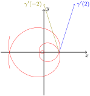
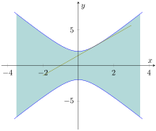

Em \((\ast)\) temos que o primeiro termo se anula devido ao primeiro fator quando \(x=0\) e devido ao segundo (extremos de integração coindicentes) quando \(x=1\text{.}\) Além disso, fazemos a mudança \(s=-4x^4\implies ds=-16x^3\, dx\) na segunda parcela.
2.
Considere a curva \(\gamma\colon\R\to\R^2\) dada por \(\gamma(t)=\big(t^2\cos(\pi t),t^2\sin(\pi
t)\big)\text{.}\) Sabe-se que a trajetória de \(\gamma\) admite duas retas tangentes distintas no ponto \((4,0)\text{.}\) O produto escalar dos vetores tangentes à trajetória de \(\gamma\) neste ponto é igual a:
\(0\text{.}\)
\(-4(4\pi^2+4)\text{.}\)
\(4(4\pi^2-4)\text{.}\)
\(4(4\pi^2+4)\text{.}\)
\(4(4-4\pi^2)\text{.}\)
Resposta.
Alternativa c.
Solução.
O ponto \((4,0)\) está na imagem da curva \(\gamma\) e é atingido quando \(t=\pm2\text{.}\) O vetor tangente em cada instante de tempo \(t\) é \(\gamma'(t)=\big(2t\cos(\pi
t)−\pi t^2\sin(\pi t),2t\sin(\pi t)+\pi t^2\cos(\pi
t)\big)\text{.}\) Calculando nos dois pontos temos \(\gamma'(2)=(4,4\pi)\) e \(\gamma'(−2)=(−4,4\pi)\text{.}\)
Apesar de desnecessário, segue um esboço da curva e os vetores tangentes pedidos:

A curva \(\gamma\) e suas duas tangentes em \((4,0)\text{.}\)
Figura5.1.1.A curva \(\gamma\) e suas duas tangentes em \((4,0)\text{.}\)
Verifique o que acontece com a imagem da curva, pois aqui temos representado apenas o trecho para \(t\in[-\pi,\pi]\text{.}\)
3.
Seja \(F(x,y)=x^2y−5xy\text{.}\) Sabe-se que o plano tangente ao gráfico de \(F\) em um ponto \(\big(x_0,y_0,F(x_0,y_0)\big)\) tem equação \(−15x+50y−z−75=0\text{.}\) Nestas condições, a soma das coordenadas \(x_0+y_0\) é igual a:
\(9\text{.}\)
\(-4\text{.}\)
\(10\text{.}\)
\(11\text{.}\)
\(0\text{.}\)
Resposta.
Alternativa b.
Solução.
Derivando \(F\) diretamente em \((x_0,y_0)\) temos \(F_x(x_0,y_0)=2x_0y_0−5y_0\) e \(F_y(x_0,y_0)=x^2_0−5x_0\text{.}\)
Da equação do planotangente no enunciado concluímos que \(F_x(x_0,y_0)=−15\) e \(F_y(x_0,y_0)=50\text{.}\) Com isso temos o sistema
cujas soluções são \(x_0=−5\) e \(y_0=1\) ou \(x_0=10\) e \(y_0=−1\text{.}\) Como o ponto \(\big(x0,y0,F(x0,y0)\big)\) pertence ao plano tangente, temos que \(−15x_0+50y_0−F(x_0,y_0)−75=0\text{,}\) que só é verificado por \(x_0=−5\) e \(y_0=1\text{,}\) donde \(x_0+y_0=−4\text{.}\)
4.
Seja \(f\colon\R^2\to\R\) dada por \(f(x,y)=e^{\alpha
x}\sin(8\beta y)\text{,}\) onde \(\alpha\) e \(\beta\neq 0\) são números reais fixados. Suponha que, para todo \((x,y)\in\R^2\text{,}\) a função \(f\) satisfaça
Esta equação vale para todos \((x,y)\in\R^2\) e, portanto, podemos atribuir valores convenientes a estas variáveis a fim de obter equações para \(\alpha\) e \(\beta\text{:}\)
Suponha que \(f^{(4)}(x) = \sqrt {1+9x^4}\text{,}\) para todo \(x
\in \mathbb {R}\text{.}\)
Usando o Polinômio de Taylor de ordem \(3\) de \(f\) em torno de \(x_0 = 0\text{,}\) obtemos a seguinte aproximação para \(f(1/2)\) com 5 casas decimais: \(\boxed{\phantom{-0,60417}}\text{.}\)
O erro cometido nesta aproximação pertence ao intervalo:
\(\displaystyle (1/384, 5/1536);\)
\(\displaystyle (1/480, 1/384);\)
\(\displaystyle (1/600, 1/480);\)
\(\displaystyle (1/750, 1/600);\)
\(\displaystyle (5/1536, 25/6144).\)
Resposta.
\(-0,60147\)
Alternativa a.
Solução.
Com os dados fornecidos no enunciado recuperamos o polinômio de ordem \(3\) de \(f\text{,}\) centrado em \(x_0=0\text{:}\)
A estimativa do erro na aproximação de \(f(x)\) pelo polinômio de Taylor de odem \(3\text{,}\) centrado em \(x_0\text{,}\) quando \(f\) é uma função que admite quarta derivada é dada por
Como \(0<\overline{x}<\dfrac{1}{2}\text{,}\) temos que \(\dfrac{1}{384}< E_3\big(\dfrac{1}{2}\big)<
\dfrac{\sqrt{1+\frac{9}{16}}}{384}=\dfrac{5}{1536}\text{.}\)
6.
Seja \(f\colon\R^2\to\R\) uma função e defina \(g\colon\R^2\to\R\) por \(g(x,y) = \arctan
\big(f(x,y)\big)\text{.}\) Suponha que os conjuntos
\begin{equation*}
\big\{(x,y)
\in \mathbb {R}^2\colon y = x^2\big\}\text{ e } \big\{ (x,y) \in
\mathbb {R}^2\colon 0<x<1, xy = 1\big\}
\end{equation*}
sejam as curvas de nível \(c=-1\) e \(c=0\text{,}\) respectivamente, de \(f\text{.}\)
Sobre o limite \(\lim \limits _{(x,y) \to (1,1)} g(x,y)\text{,}\) é correto afirmar que:
o limite não existe.
o limite existe e é igual a \(0\text{.}\)
o limite existe e é igual a \(\pi/4\text{.}\)
o limite existe e é igual a \(-\pi/4\text{.}\)
o limite existe e é um número real, mas não temos informações suficientes para determinar seu valor.
Não temos informações suficientes para determinar se o limite existe ou não.
Sobre o limite \(\lim \limits _{(x,y) \to (1,1)}
g(x,x^2)+\dfrac {(x-1)^2}{(x-1)^2+y^2}g(x,y)\text{,}\) é correto afirmar que:
o limite não existe.
o limite existe e é igual a \(0\text{.}\)
o limite existe e é igual a \(\pi/4\text{.}\)
o limite existe e é igual a \(-\pi /4\text{.}\)
o limite existe e é um número real, mas não temos informações suficientes para determinar seu valor.
Não temos informações suficientes para determinar se o limite existe ou não.
Resposta.
Alternativa a.
Alternativa d.
Solução.
Para o primeiro limite observamos que a curva \(\gamma_1(t)=(t,t^2)\) é tal que
pois esta curva parametriza a curva de nível \(-1\) de \(g\text{.}\) De modo análogo, a curva \(\gamma_2(t)=\big(t,\dfrac{1}{t}\big)\text{,}\)\(0< t<
1\text{,}\) nos dá que
mostrando que \(\lim \limits
_{(x,y) \to (1,1)} g(x,y)\) não existe.
Para o segundo limite, notamos que a primeira parcela vale \(-\dfrac{\pi}{4},\) (exatamente o limite de \(g\) ao longo de \(\gamma_1\) no parágrafo acima). Já segunda parcela tem limite nulo, pois um produto que tem \(g(x,y)\) como um fator limitado (entre \(-\dfrac{\pi}{2}\) e \(\dfrac{\pi}{2}\)) e \(\dfrac{(x-1)^2}{(x-1)^2+y^2}\) como fator que tende a zero (pois é uma função contínua no ponto \((1,1)\)). Desta forma a soma tem limite igual a \(-\dfrac{\pi}{4}\text{.}\)
7.
Seja \(f\colon\R^2\to\R\) dada por \(f(x,y)=\begin{cases}
\dfrac {\sin (xy^3)}{x^2+y^4},&\text{ se }(x,y) \neq (0,0)\\
\hfill 0,&\text{ se }(x,y)=(0,0)
\end{cases}\text{.}\)
Decida se cada uma das afirmações abaixo é verdadeira ou falsa.
\(f\) é contínua em \((0,0)\text{.}\)
\(f\) é diferenciável em \((0,0)\text{.}\)
\(\dfrac {\partial f}{\partial x}\) e \(\dfrac {\partial
f}{\partial y}\) existem em todos os pontos de \(\R^2\text{.}\)
O plano \(z=0\) é tangente ao gráfico de \(f\) em \((0,0,0)\text{.}\)
Resposta.
Verdadeira
Falsa
Verdadeira
Falsa
Solução.
Precisamos verificar se \(\lim \limits _{(x,y) \to (0,0)}
f(x,y)=f(0,0)=0\text{.}\) Para tanto, se \((x,y)\neq (0,0)\) podemos escrever
o segundo fator é limitado: basta trocar \(y\) por \(y^2\) no exemplo aos 4min 20seg de Figura A.3.6;
o terceiro fator tende a \(1\text{:}\) aplique a Proposição A.3.1 com as funções \(f(u)=\begin{cases}\dfrac{\sin u}{u},& u\neq 0\\ \hfill
1,& u=0\end{cases}\) e \(g(x,y)=xy^3\text{.}\)
Segue então, do Corolário A.3.7, a verificação da igualdade incial, garantindo a continuidade de \(f\) na origem.
A diferenciabilidade de \(f\) em \((0,0)\) depende da verificação da igualdade
onde o primeiro fator tende a \(1\) (visto acima), mas o segundo e terceiro, apesar de limitados, não possuem limite (aqui você já deve ser capaz de encontrar as curvas que atestam isso). Em particular, o limite em questão não se anula e, desta forma, concluímos que \(f\) não é diferenciável em \((0,0)\text{.}\)
A existência das derivadas parciais na origem é parte da solução do item anterior. Nos demais pontos observamos que \(f\) é dada por uma expressão que nos permite aplicar as regras de derivação (é um bom exercício fazer essas contas!) e portanto as derivadas parcias fora da origem também existem.
Como \(f\) não é difrenciável na origem, ela não admite plano tangente neste ponto de seu domínio, apesar das derivadas parciais existirem ali e ser possível escrever a equação do que seria o plano tangente (neste caso este plano daria boas aproximações nas direções dos eixos coordenados, mas não em outras direções. Veja a figura:
Sobre a continuidade de \(F\) em \((-5,1)\) podemos afirmar que:
é contínua em \((-5,1)\text{.}\)
não é contínua em \((-5,1)\text{.}\)
não temos informação suficiente para dizer algo.
Sobre a diferenciabilidade de \(F\) em \((-5,1)\text{,}\) podemos afirmar que:
é diferenciável em \((-5,1)\text{.}\)
não é diferenciável em \((-5,1)\text{.}\)
não temos informação suficiente para dizer algo.
Sobre \(\dfrac {\partial F}{\partial x} (-5,1)\) podemos afirmar que:
vale \(-5\text{.}\)
vale \(0\text{.}\)
não existe.
não é possível garantir sua existência.
Sobre \(\dfrac {\partial F}{\partial y} (-5,1)\)
vale \(-10\text{.}\)
vale \(-12\text{.}\)
não existe.
não é possível garantir sua existência.
Resposta.
Alternativa c.
Alternativa c.
Alternativa b.
Alternativa a.
Solução.
Apesar das curvas \(\gamma\) e \(\sigma\) serem contínuas, \(\gamma(1/2)=\sigma(0)=(-5,1)\text{,}\)\(F(-5,1)=F\big(\gamma(1/2)\big)=-20(\frac{1}{2})^2=-5\text{,}\)\(F\big(\sigma(0)\big)=\ln(0^2+1)-5\text{,}\)
temos informações sobre \(F\) apenas ao longo de duas curvas. Poderia haver uma terceira curva ao longo da qual a função não tem o mesmo comportamento, o que mostraria sua descontinuidade ali.
O mesmo argumento acima também se aplica aqui.
As curvas dadas têm imagens paralelas aos eixos coordenados, ambas passando por \((-5,1)\text{,}\) logo podemos usá-las para obter as derivadas parciais!
onde, em \((\ast)\text{,}\) fizemos a mudança \(k=2t-1\text{.}\)
9.
Nesta questão \(m\) e \(k\) são números reais fixados. Considere a função \(F(x,y) = \sqrt
{1+mx^2+ky^2}\text{.}\) Sabe-se que:
A intersecção de \(\text {graf}(F)\) com o plano \(x=0\) está contida numa elipse no plano \(x=0\) que tem parametrização \(y(t) = 2 \cos (t)\text{,}\)\(z(t) = \sin
(t)\text{,}\) para todo \(t \in \mathbb {R}.\)
A curva de nível \(c = \sqrt {2}\) de \(F\) é uma hipérbole de assíntotas \(y = \pm 2x\text{.}\)
Com essas informações:
determine \(m\) e \(k\text{;}\)
descreva o conjunto \(\text {Dom}(F)\) e faça um esboço;
encontre uma parametrização para a parte da curva de nível que contém o ponto \((x_0,y_0) = (1,2\sqrt {2})\) e determine a reta tangente a essa curva em \((x_0,y_0)\text{;}\)
esboce o gráfico de \(F\text{.}\)
Resposta.
\(m=1\) e \(k=-\dfrac{1}{4}\text{.}\)
\(\text {Dom}(F)=\big\{(x,y)\in\mathbb R^2\colon
1+x^2-\dfrac{y^2}{4}\geq 0 \big\}\text{.}\) Veja o esboço do domínio na solução.
\(\gamma(t)=(\tan t, 2\sec(t))\text{,}\)\(t\in
\big(-\dfrac{\pi}{2},\dfrac{\pi}{2}\big)\) e \(r\colon
y=\sqrt{2}x+\sqrt{2}\text{.}\)
Para que isso seja descrito pela parametrização dada (uma elipse), devemos ter \(k< 0\text{.}\) Além disso, tal elipse tem equação cartesiana \(z^2+\dfrac{y^2}{4}=1\text{.}\) Fica fácil então ver que \(k=-\dfrac{1}{4}\text{.}\)
é uma hipérbole de assíntotas \(y=\pm 2x\text{.}\) Observe que isso garante \(m>0\text{,}\) uma vez que \(k<0\text{.}\) Da equação desta hipérbole, vemos que seus focos estão no eixo \(Ox\) e podemos escrever sua porção nos quadrantes \(y> 0\) como \(y=2\sqrt{mx^2-1}\text{,}\) que tem como assíntotas as retas \(y=\pm 2\sqrt{m}x\text{.}\) Assim, \(2\sqrt{m}=2\implies
m=1\text{.}\)
De posse dos valores de \(m\) e \(k\text{,}\) temos a expressão de \(F\text{:}\)\(F(x,y)=\sqrt{1+x^2-\dfrac{y^2}{4}}\text{.}\) Seu domínio máximo é, então, aquele onde o termo na raiz é não-negativo, ou seja,
Sua representação gráfica corresponte à região entre os ramos da hipérbole \(-x^2+\dfrac{y^2}{4}=1\) (atenção aos eixos fora de escala!):

O domínio de \(F\) e a tangente pedida no item abaixo.
Figura5.1.3.O domínio de \(F\) e a tangente pedida no item abaixo.
Como \(F(1,2\sqrt
{2})=\sqrt{1+1^2-\dfrac{(2\sqrt{2})^2}{4}}=0\text{,}\) estamos falando da curva de nível \(0\) de \(F\text{,}\) a qual (por pura sorte) é exatamente aquela que delimira o domínio, da qual pedimos a parte que contém o ponto dado, ou seja, vamos trabalhar com o ramo "superior" da hipérbole.
Existem muitas maneiras de parametrizar esse ramo: funções trigonométricas, trigonométricas hiperbólicas ou mesmo descrevê-la como o gráfico de uma função a uma variável:
Usaremos o primeiro caso para determinar a reta tangente pedida. Para isso precisamos de \(t_0\in\big(-\dfrac{\pi}{2},\dfrac{\pi}{2}\big)\) tal que \(\gamma(t_0)=(1,2\sqrt {2})\text{,}\) fácil: \(t_0=\dfrac{\pi}{4}\text{.}\) A equação da reta pedida escreve-se:
A equação geral de tal reta é \(r\colon
y=\sqrt{2}x+\sqrt{2}\text{.}\)
Pode-se perceber, fazendo \(z=F(x,y)\) que o gráfico de \(F\) satisfaz \(-x^2+\dfrac{y^2}{4}+z^2=1\text{,}\) com \(z\geq 0\text{,}\) ou seja, é um hiperbolóide de uma folha (seções elípticas) em torno do eixo \(Ox\text{.}\) Sem isso, o gráfico da função é construído analisando-se suas curvas de nível e cortes por planos verticais. Começando pelos últimos temos:
\(z=F(0,y)=\sqrt{1-\dfrac{y^2}{4}}\text{,}\) uma parte de elipse;
\(z=F(x,0)=\sqrt{1+x^2}\text{,}\) um ramo de hipérbole;
Já as curvas de nível \(c\) tem uma alteração no comportamento:
\(0\leq c< 1\text{:}\) hipérboles com focos no eixo \(Oy\text{;}\)
\(c=1\text{:}\) par de retas concorrentes na origem, \(y=\pm 2x\text{;}\)
\(c> 1\text{:}\) hipérboles com focos no eixo \(Ox\text{;}\)